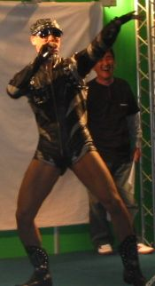
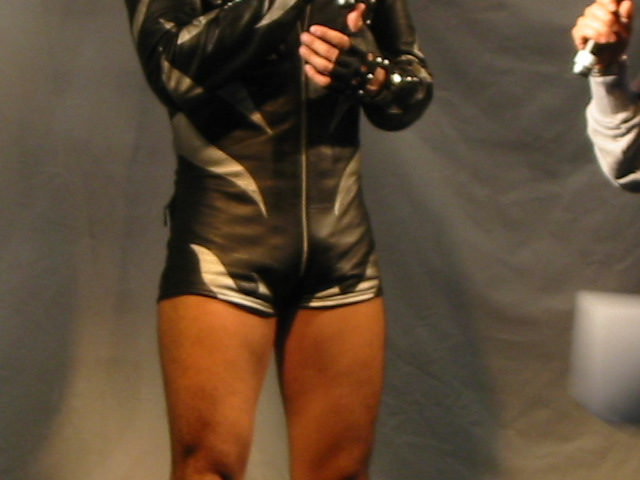
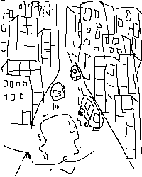

| 過去ログ | |||
|---|---|---|---|
| 2006/02 | 2006/01 | 2005/12 前半 後半 | 2005/11 前半 後半 |
 鋭意執筆中
あっしたは大阪モーターサイクルショー2006に行って来るですよーーー(´∀`)♪
あんなバイクこんなバイクに見れる・触れる・乗れるっ！！
うっひょひょーーぃ
試乗車種はなんなのかねー、えーと、、、
【HONDA】 CB1300SUPER BOL'DOR･CBR1000RR･CBR600RR･FORZA
【YAMAHA】 T-MAX･DS400･MAXAM･EC-02
【SUZUKI】 GSX1300R･GSX-R1000･GSR600･DR-Z400SM
【KAWASAKI】 ZRX1200･W650･ER-6n･250TR
【HARLEY-DAVIDSON】 XL1200C･FLSTN･VRSCD･XB12Scg
【BMW】 K1200R･K1200S･R1200ST･R1200GS
ﾟ ﾟ
ッキャアアアァァァアァアァ( Д ;)ァアァァアアアアアァアアア！！！！！
じ、じ、じ、じ、ぢ、じ、GSX-R1000だってーー！！？
うわぁぁぁぁぁ！俺がバイクに興味を持ち始めてからずーっと乗りたかったやつじゃまいかああ！１１
ぶぎゃーーあかさたなふじこ(違
乗る。これ絶対乗る。乗りまくる。誰に何て言われようが乗る。
ってゆーか降りない(´･ｪ･`)
係員に言われるまで降りてやんない。
えー、妹者からバトンが来ました。
ぱっぱとやっていくっかねー
【おまいのサイトについて二、三の質問バトン】
狩人が歌ってる「東京砂漠」じゃないけど
大阪梅田もすげー町並みなわけで、阪急砂漠。
緑豊かな土地で育った俺にとって、整然と立ち並ぶオフィス街は恐るべき光景だったりして。
 草木はどこよ？山とか無いん！？
加えて極度の方向音痴。
面接にいく会社の下見に行ったんですが、まー相変わらず正反対の方向で迷っていました。
北はどっちだ、、、
あーそうか、北って事は上だな！
みたいな。
北どころかお前の明日はどっちだ。
しかも俺、臆病じゃないからガンガン突き進むんです。
だから余計に癖が悪い。
だからさらに迷う。
あほです、アホ。
ってゆーかもはや病気です。
ｳﾎﾞｧｰ
うむ、スーツって好きよ。
なんつーかこう、キュッっとする。
いや、どういう事かわからんけどさ('`
あーこないだ散髪行ったんですよ。
こんないい加減な髪型じゃあいかんなーって。
あとほら、春だし。
って事で床屋での出来事、回想スタート。
入店、その第一声
ラッシャイヤセー！今来た方2番の椅子へどうぞー！
店員「らっしゃいませ！今日はどんな感じにいたしましょう？」
俺 「あ、じゃあ春なカンジで」
店員「は？」
俺 「あ、いや、あれです、春だからすっかりしたカンジでって言ったんです」
店員「はぁ」
俺 「えーとその、あれです。今もっさりしとるから超☆すっきりさせてください」
店員「短くするんですね」
俺 「ああ、ええ、もーそんな感じで適当にやってください(´-ω-`)」
断髪開始、断罪編
ジャギッ
店員「あ。」
Σ(ﾟдﾟ; 三 ;ﾟдﾟ)
店員「ウフフ＾−＾」
俺 「アハハ＾−＾」
「…」
「…」
ﾁｮｷﾁｮｷ、、、（再開
店員「バリカン使ってもよろしいですか？」
俺 「はいはい、なんでも使ってつかぁさい」(広島
店員「はいー」
バリバリ、、、バギンッ
Σ(;ﾟдﾟ)い、いてえ！！
店員「…あの、バリカンがあなたの髪に負けてしまった様です、、、大丈夫ですか、、、？」
俺 「ああ、またですか。大丈夫です、いつもの事ですから。」
店員「すごい硬いんですね、、、なんか動物みｔ、ゲフッ！ゲフフンッ！！」
俺 「ウフフフ…＾−＾」
店員「アハハハ…＾−＾」
お会計、そして過去の清算へ
一同「お疲れ様でしたー！！」
俺 「ありがとー気持ちよかったですー」
店員「xxxx円になります。…あの、本当にすいませんでした。」
俺 「いやいや、動物みたいな髪質の俺が悪いんですよ＾−＾」
店員「Σ(;´･ω･`)」
俺 「また来ます」
Σ(ΩдΩ)ﾌﾞﾜｧｧｱ(溢れ出す涙
フィナーレ、そして感動へ
一同「ありがとうございましたーぁああ！！」
これ、実際にあった事なんだが…意味不。
ってゆーかなんか書いててむかつく。
ｵﾜﾙ
ちっきしょおおおおお！駐禁切られたああぁあ！！(#ﾟ,ロﾟ),;'.･
どうもTEVAです＿|￣|○
あー眠いねむい
28日より思い出したかのように就職活動を始めています。
しかしバイトは続している為、やたらめったら忙しいわけですな。
昼間はどこそこに行って夜は夜勤。
いつ寝てるねん。
食ったっけ？寝たっけ？みたいな。
これだけ聞くと、まー大層に聞こえますが実際はそう大したことではありません。
単にここ2.3日だけの話ですｗ
ですが
今までボケーっと生活していた俺にとっては物凄い環境の変化なわけで。
いきなりやってくる大量の社会経験。
びっくりしちまって胃がびっくりげろんちょ。
オエェエ(´△`)
まーこれ乗り越えられれば、俺もやっとこさ子供脱出だろーね。
ネオ☆テバっすよ。ネオ。
年始めに目標掲げるだけじゃあネオの称号はまだ早いって事ですね。
ﾇﾌﾝ('ｪ`)
# リンクページに、あゆちゅんのブログ「ちゅんのお話」を追加しました。
# 復活おめでたい(´∀`)ﾉ
# しかしまだドラの優位は変わらないのであった。皆ｶﾞﾑﾊﾞﾚ(何様